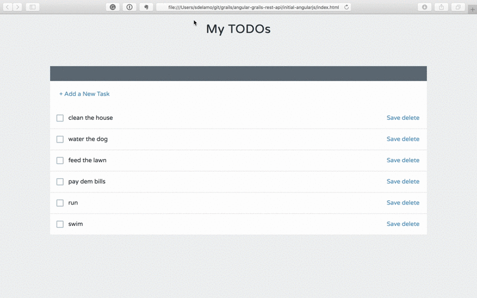
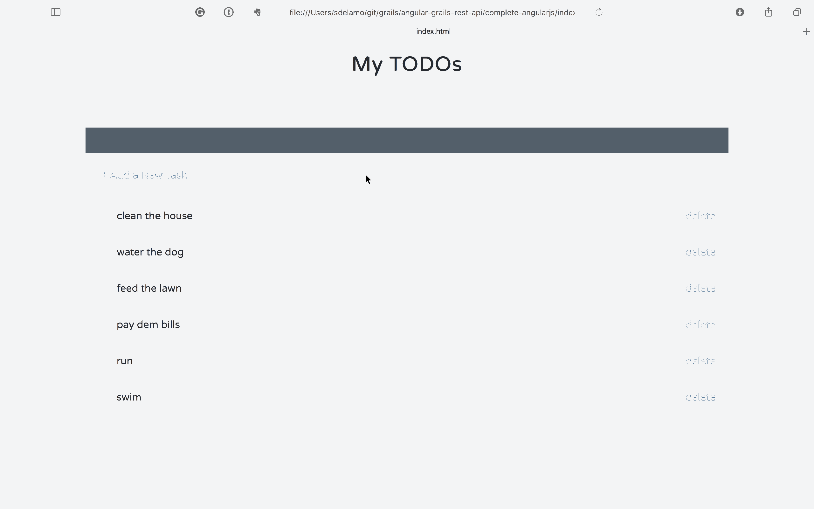

Building a REST API with Grails and AngularJS 1.x
Build a backend for an already existing AngularJS application (Angular 1) with Grails rest api profile
Authors: Sergio del Amo
Grails Version: 4
1 Grails Training
2 Getting Started
In this guide you are going to connect an existing AngularJS todo app to a Grails backend.
2.1 What you will need
2.2 How to complete the guide
3 Initial Angular Application
This section displays the code developed during the Treehouse AngularJS course. During that course an AngularJS application is developed. The application is a todo list manager.
| The initial AngularJS app is not connected to any backend. If you refreshed the browser, todo list changes are lost. |

index.html is the entry point to our AngularJS app.
link:../snippets/../initial-angularjs/index.html[role=include]We create the AngularJS application, in app.js
link:../snippets/../initial-angularjs/scripts/app.js[role=include]An AngularJS controller manages the application flow:
link:../snippets/../initial-angularjs/scripts/controllers/main.js[role=include]We have a todos directive. This directive uses the previous controller and the next template:
link:../snippets/../initial-angularjs/scripts/directives/todos.js[role=include]link:../snippets/../initial-angularjs/templates/todos.html[role=include]Our data service is currently loading todos from a mock json file.
link:../snippets/../initial-angularjs/scripts/services/data.js[role=include]link:../snippets/../initial-angularjs/mock/todos.json[role=include]4 Writing the Grails Application
The initial project, which we are going to work on, was generated with Grails REST profile.
grails create-app myapp --profile=rest-api4.1 Domain Class
Create a persistent entity to store Todos. Most common way to handle persistence in Grails is the use of Grails Domain Classes:
complete$ ./grailsw create-domain-class TodoThe Todo domain class is our data model. We define different properties to store the Todo characteristics.
link:../snippets/grails-app/domain/demo/Todo.groovy[role=include]With a Unit Test, we test that name is a required property.
link:../snippets/src/test/groovy/demo/TodoSpec.groovy[role=include]We then load some test data in BootStrap.groovy.
link:../snippets/grails-app/init/demo/BootStrap.groovy[role=include]We annotated the domain class with @Resource
link:../snippets/grails-app/domain/demo/Todo.groovy[role=include]This annotation exposes the Todo domain class as a REST resource
The easiest way to create a RESTful API in Grails is to expose a domain class as a REST resource. Simply by adding the Resource transformation and specifying a URI, your domain class will automatically be available as a REST resource in either XML or JSON formats. The transformation will automatically create a controller called TodoController and register the necessary RESTful URL mapping
This is the URL Mapping registered for our domain class.
HTTP Method URI Grails Action |
URI |
Grails Action |
GET |
/todos |
index |
GET |
/todos/create |
create |
POST |
/todos |
save |
GET |
/todos/${id} |
show |
GET |
/todos/${id}/edit |
edit |
PUT |
/todos/${id} |
update |
DELETE |
/todos/${id} |
delete |
4.2 Enable CORS
Because the client side (AngularJS) and server side (Grails) will be running on separate ports, CORS configuration is required.
Modify your application.yml to enable CORS
link:../snippets/grails-app/conf/application.yml[role=include]5 Connect Angular Application to Grails
We add a directive to detect when the users presses ENTER while editing a Todo name
link:../snippets/../complete-angularjs/index.html[role=include]link:../snippets/../complete-angularjs/scripts/directives/ngEnter.js[role=include]We are going to modify the UI slightly. E.g. We are going to remove the save button, if the user modifies the todo (either changes the name or completes), we save the changes in the server.
link:../snippets/../complete-angularjs/templates/todos.html[role=include]link:../snippets/../complete-angularjs/scripts/controllers/main.js[role=include]Data service now connects to a Grails backend instead of loading a mock json file.
link:../snippets/../complete-angularjs/scripts/services/data.js[role=include]6 Running the Application
Open you angular app and you will enjoy a todo manager powered by a Grails backend. You can refresh your browser without losing the changes.
